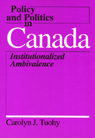

<body bgcolor="#FFFFFF" text="#000000" link="#0000FF" vlink="#CC0000" alink="#CC0000"><center><hr width="350" size="1" align="center" noshade>A comparative perspective on the distinctive feature of the Canadian policy process enabling conflict resolution<hr width="350" size="1" align="center" noshade><p><a href="https://cdcshoppingcart.uchicago.edu/Cart/ChicagoBook.aspx?ISBN=9780877228707&&PRESS=temple" target="_top">Buy this book!</a> | <a href="https://cdcshoppingcart.uchicago.edu/Cart/Cart.aspx?PRESS=temple" target="_top">View Cart</a> | <a href="https://cdcshoppingcart.uchicago.edu/Cart/Cart.aspx?PRESS=temple" target="_top">Check Out</a></p><p></p></center><!--none//--><h1>Policy and Politics in Canada</h1>
<H2>Institutionalized Ambivalence</H2>
<h3>Carolyn J. Tuohy</h3>
<P>cloth 0-87722-870-1 $85.50, Jun 92, <FONT COLOR=#990033>Available</FONT>
<br>paper 0-87722-871-X $28.95, May 92, <FONT COLOR=#990033>Out of Stock Unavailable</FONT>
<br>Electronic Book 1-43990-702-1 $29.95 <FONT COLOR=#990033>Available</FONT>
<BR> 352 pp
</P><p>At a time when Canadian political institutions are being fundamentally questioned, this book provides a comparative perspective on the distinctive features of the Canadian policy process hich have enabled conflict to be resolved in the past. In comparison with other Western industrial nations, Canada's policies in some arenas appear as models of workable compromise; in others, they stand out as marked by continuing irresolution. In this first book-length treatment of Canadian public policy in comparative perspective, Carolyn Tuohy focuses on constitutional change, health care delivery, industrial relations and labor market policy, economic development and adjustment, oil and gas policy, and minority language rights.
<p>What distinguishes Canada's characteristic policy process is its quintessential ambivalence: ambivalence about the appropriate role of the state, about definitions of political community, and about individual and collective values and conceptions of rights. Embedded in the country's political institutions, it has deep roots in Canada's relationship to the United States, its history of English-French tensions, and its regional diversity.
<p>Examining in particular the delicate federal-provincial division of power and the legislative-judicial relationship, Tuohy discusses how the constitutional debates of the 1980s and 1990s are testing Canada's institutions to resolve conflict.
<BR>&nbsp;<h2>Contents</h2><P>
<p>Editors' Preface
<br>Preface
<p>1. Introduction
<br>The Roots of Ambivalence
<br>The Institutionalization of Ambivalence
<br>The Organization of Interests
<br>Conclusions
<br>Notes
<p>2. Constitutional Change
<br>Context
<br>Agenda
<br>Process
<br>Consequences
<br>Readings
<br><I>The P�quiste Manifesto &#149
The Federal Response to Quebec's Constitutional Agenda &#149
The Quebec Referendum &#149
Entrenched Rights versus Parliamentary Supremacy &#149
The Quebec Liberals' Constitutional Position during the 1980 Referendum Campaign &#149
The Meech Lake Accord (Excerpts) &#149
Trudeau's Criticism of the Accord &#149
One Legislator's Ambivalence</I>
<br>Notes
<p>3. Health Care Delivery
<br>Context
<br>Agenda
<br>Process
<br>Consequences
<br>Readings
<br><I>A Health Charter for Canadians &#149
Governmental Insurance and Clinical Judgment: A Medical View &#149
The Canadian Medical Association and Canadian Medicare &#149
The Canadian Nurses Association and Canadian Medicare &#149
A Consumers' Coalition Seeks a Community-Based Health Plan &#149
Extra-Billing and the Universality of Social Programs &#149
The Medical Profession Seeks a Partnership with Government &#149
The Policy Agenda of the 1990s at the Provincial Level</I>
<br>Notes
<p>4. Industrial Relations and Labour-Market Policy
<br>Context
<br>Agenda
<br>Process
<br>Consequences
<br>Readings
<br><I>The Business View of Labour-Management Cooperation &#149
Labour's Approach to Social Partnership &#149
Government as a Catalyst in Labour-Management Cooperation &#149
An Evaluation of Government Adjustment Assistance &#149
Labour on Collective Bargaining and Labour-Market Policy</I>
<br>Notes
<p>5. Economic Development and Adjustment
<br>Context
<br>Agenda
<br>Process
<br>Consequences
<br>Readings
<br><I>The BCNI Critique of Canadian Industrial Policy &#149
Labour's Goals: Full Employment and Greater Public Control &#149
The Macdonald Commission on Canada-U.S. Trade &#149
Labour's Focus on Full Employment &#149
The Commons Debate on the Free Trade Agreement</I>
<br>Notes
<p>6. Oil and Gas Policy
<br>Context
<br>Agenda
<br>Process
<br>Consequences
<br>Readings
<br><I>The Gordon Commission's View of Foreign Investment in Canadian Oil &#149
Western Canadian Resistance to the National Energy Program &#149
The Federal Defence of the National Energy Program &#149
The Business Community and the National Energy Program &#149
Federal and Provincial Powers over Natural Resources</I>
<br>Notes
<p>7. Minority Language Rights
<br>Context
<br>Agenda
<br>Process
<br>Consequences
<br>Readings
<br><I>Trudeau on Language Rights &#149
L�vesque on Francophones outside Quebec &#149
The Manifesto of Quebec's Radical Nationalists &#149
The Union Nationale Government on the Status of French &#149
The Courts on Linguistic Education Rights &#149
Language Rights in the Canadian Charter of Rights and Freedom &#149
The Commissioner of Official Languages on Multiculturalism</I>
<br>Notes
<p>8. Competence and Crisis: Canada's Ambivalent Institutions
<br>Elite Accommodation: The Role of Mediating Interests
<br>Partisanship and Federalism
<br>The Need for Institutional Change
<br>Summary
<p>References
<br>Index
</P><BR>&nbsp;<H2>About the Author(s)</H2>
<P><b>Carolyn J. Tuohy</b> is Professor of Political Science at the University of Toronto.</P>
<BR><H2>Subject Categories</H2>
<p><A HREF="/tempress/political.html" TARGET="_top">Political Science and Public Policy</a>
</p>
<BR><h2 class="inpageheading">In the series</H2>
<P><I><a href="http://www.temple.edu/tempress/policy_politics.html" onMouseOver="window.status='Click for other books in this series!'; return true;" onMouseOut="window.status=''; return true;" target="_top">Policy and Politics in Industrial States</a></i>, edited by Douglas E. Ashford, Peter J. Katzenstein, and T.J. Pempel.
</p><p>Each volume in <i>Policy and Politics in Industrial States</i>, edited by Douglas E. Ashford, Peter J. Katzenstein, and T.J. Pempel, is a sophisticated textbook that focuses on a single country but in a comparative policy context. Each consists of a balance of analysis and primary documents for six major issues. The issues include topics like economic policy, labor relations, social welfare, and the internal organization of the state.</p>
<p align="center"><a href="https://cdcshoppingcart.uchicago.edu/Cart/ChicagoBook.aspx?ISBN=9780877228707&&PRESS=temple" target="_top">Buy this book!</a> | <a href="https://cdcshoppingcart.uchicago.edu/Cart/Cart.aspx?PRESS=temple" target="_top">View Cart</a> | <a href="https://cdcshoppingcart.uchicago.edu/Cart/Cart.aspx?PRESS=temple" target="_top">Check Out</a></p><p><font face="Arial" size="1"><a href="copyright.html" onMouseOver="window.status='Web Copyright Policy';return true;" onMouseOut="window.status=''" title="Web Copyright Policy">&copy;</a> 2015 <a href="http://www.temple.edu" target="new" onMouseOver="window.status='Link to Temple University home page';return true;" onMouseOut="window.status=''" title="Link to Temple University home page">Temple University</a>. All Rights Reserved. http://www.temple.edu/tempress/titles/485_reg.html</font></p>